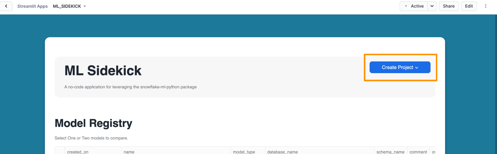
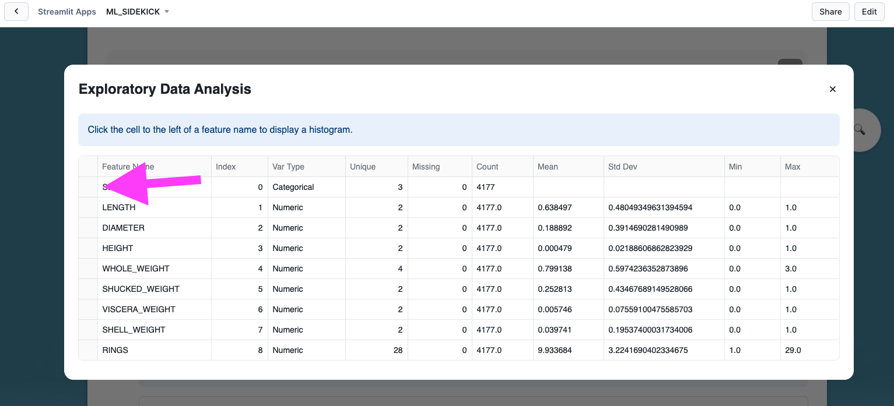
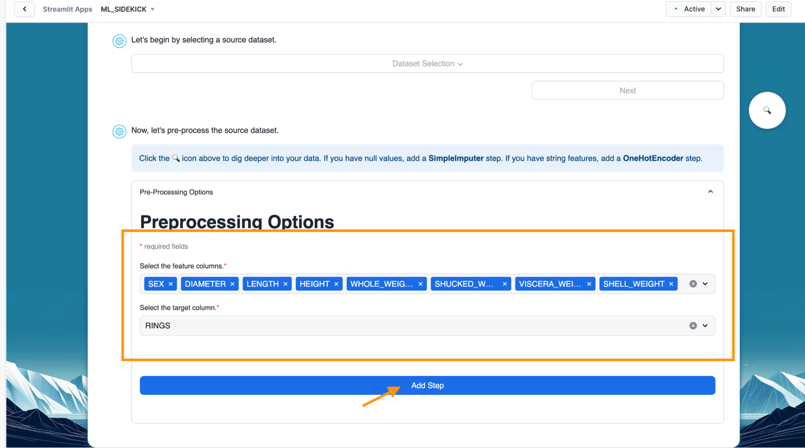
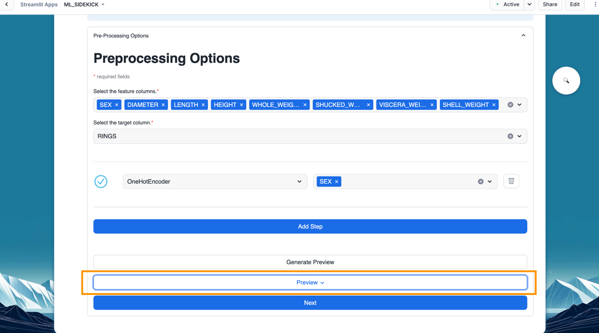
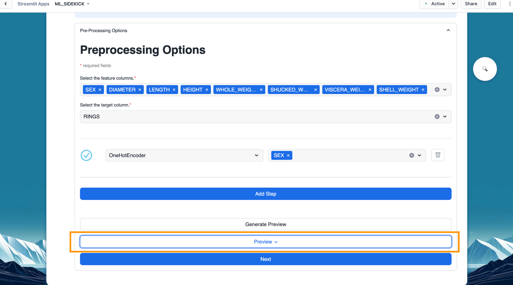
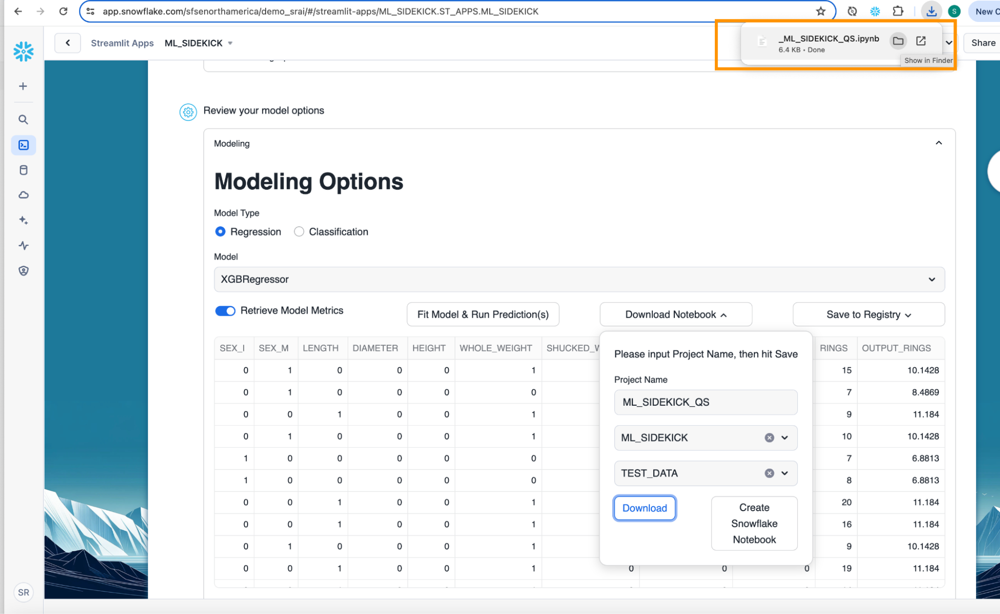
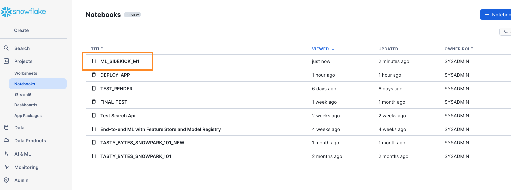
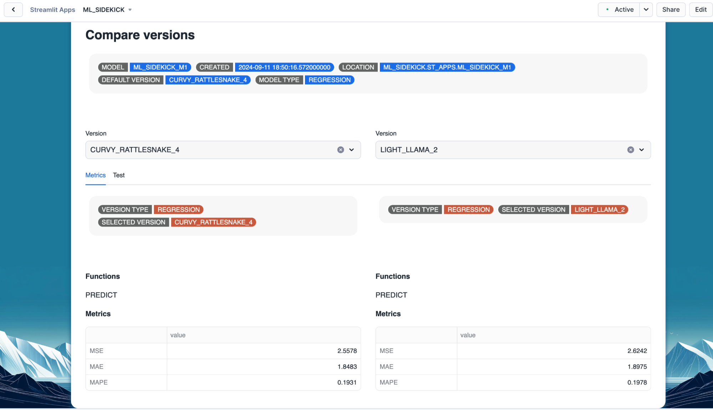
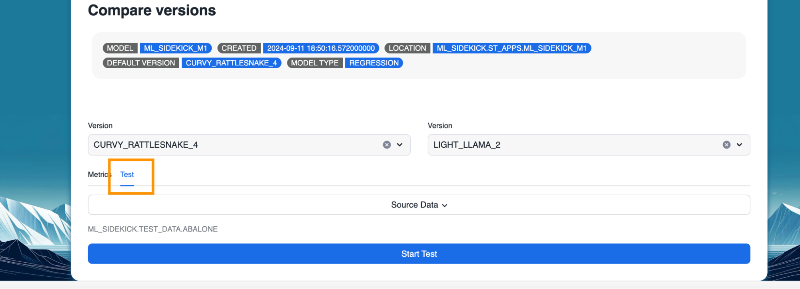
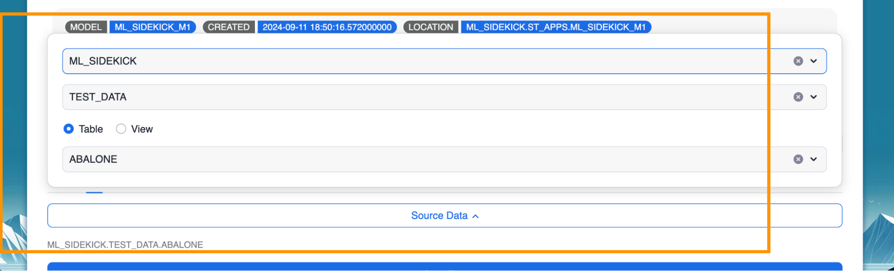

In this quickstart, you will be introduced to ML Sidekick, a no-code app built using Streamlit in Snowflake, designed for building and deploying machine learning models in Snowflake. This application aids both seasoned data scientists and business users with no coding experience by simplifying the machine learning process and making it accessible to a broader audience.
Prerequisites
- A Snowflake account login. If not, you will need to register for a free trial account
- Install Anaconda
What You'll Learn
- How to deploy streamlit in Snowflake app via jupyter notebook
- How to navigate the deployed app and utilize its features effectively which include:
- Selection and preprocessing of data to build machine learning models
- Train and evaluate machine learning models within the Snowflake environment
- Log models to Snowflake model registry
- Generate python code for the pipeline in form a notebook
- Explore/compare different versions of registered models or different models
What You'll Build
- Streamlit in Snowflake application called ML_SIDEKICK which allows you to:
- Create a streamlined pipeline that aids in data selection, preprocessing, model training, and performance evaluation.
- Register the created model to Snowflake model registry for easy versioning and comparison.
- Generate a Snowflake notebook that showcases the underlying Python code for further exploration and customization.
Overview
You will use Snowsight, the Snowflake web interface, to:
- Create Snowflake objects (warehouse, database, schema, raw tables)
- Ingest data into raw tables
Download datasets
- You can download the required datasets from the GitHub repository
- Alternatively, you can download the datasets from from UC Irvine Dataset Repository
- Abalone dataset - This dataset will be used for the regression model (target - Rings) Abalone.data needs to be converted into a csv for it to work
- Diabetes dataset - This dataset will be used for the classification model (target - Diabetes_binary).
- Please be sure to download the dataset with the name diabetes_binary_5050split_health_indicators_BRFSS2015.csv
Creating Objects
- Navigate to Worksheets, click "+" in the top-right corner to create a new Worksheet, and choose "SQL Worksheet".
- Paste and run the SQL from (https://github.com/Snowflake-Labs/sfguide-build-and-deploy-snowpark-ml-models-using-streamlit-snowflake-notebooks/blob/main/deploy_sis_app.sql) in the worksheet to create Snowflake objects (Streamlit in Snowflake application, warehouse, database, schema, raw tables).
You will likely need a role with necessary CREATE INTEGRATION and CREATE GIT REPOSITORY privileges to create the Git integration and repository. If you do not have the necessary permissions, please reach out to your Snowflake administrator.
Loading Data through Snowflake UI
- Navigate to the Data button on the far left column and click on the Data button to open up the databases. Find the ML_SIDEKICK you just created using the SQL syntax above.

- Navigate to the one of the tables we created either Abalone or Diabetes and click on the "Load Data" button.

- Follow along the prompts to select the warehouse we created to load the data into Snowflake. (ML_SIDEKICK_LOAD_WH)

- Find your abalone or diabetes dataset using the browse button and click the "next" button. Follow the prompts to load the dataset.

- If your dataset has a header be sure to change the header portion in the file format section, and for the purposes of testing you can select the second option for what happens if you have an error while loading the dataset.


- Once the data is loaded, you can see the Data Preview as seen here.

Overview
In this section, we will navigate the deployed app to select the dataset we would like to work with.
Steps for selecting dataset
- Launch the app and click on "Create Project" to start the flow.
 - Select "ML Model". This would navigate you to the data selection section in the app.

- Click on "Data Selection". This would give you options of the available datasets in your Snowflake account.

- Select the appropriate database, schema and table as shown below. In this quickstart, we will go with the Abalone dataset that we previously loaded. However, we can also go through the same workflow for the Diabetes dataset. We can see a snapshot of the data we have selected come up on the right. Once we are satisfied with our selection, we can click on "Next" to begin pre-processing the data we have selected.


Overview
After dataset selection, we tackle data preprocessing—a critical step for model performance. Our app streamlines this process, automatically handling missing values, encoding categories, and scaling numbers. This ensures clean, consistent data primed for ML algorithms to extract patterns and make accurate predictions, all within the Snowflake environment. With just a few clicks, our data is transformed from raw to ML-ready, setting the stage for powerful model training.
Steps for pre-processing selected dataset
- Optional - Click on the inspect icon as shown below. This brings up an exploratory data analysis pop up.

- Optional - In the pop up, we see different descriptive statistics for all the columns in our selected dataset. We can click on the cell next to any of the columns to a visualization for value distribution in that column. 

- After we are done going over our data analysis, we can select the features and target for our machine learning model and click on "Add Step". 
- Add step allows us to pre-process any selected column to encode categorical columns or scale numeric values along with providing us the ability to impute missing values. Below, we select one hot encoder for the "SEX" column which is categorical in nature.


- Optional - We can click on "Generate Preview" to see how the column got encoded.
 

- With our dataset pre-process, we can go to the next part of the flow which is training our machine learning model by clicking on the "Next" button.

Overview
After prepping our data, we go on to training our machine learning model. In this section of the quickstart, we will train a regression model using prepped Abalone data with Rings as our target. Alternatively, you can also train a classification model using Diabetes data. We will see how easily we can train a machine learning model and register it to the Snowflake registry with this app.
Steps to train machine learning model in Snowflake
- Select "Regression" as the model type.

- Next select "XGBRegressor" as the model we would be training. Below you can see we have few other regression models available to train as well. In case of classification models, you will find XGBclassifier and Logistic Regression as available models.

- Once you have the model type and model selected, click on "Fit Model and Run Prediction(s)" button. This would train our model, make predictions and also calculate performance metrics as we have "Retrieve Model Metrics" turned on.

- Scroll down to view the performance metrics and feature importance.

Steps to register model to Snowflake registry
- Once we have our model trained, we can generate a jupyter notebook or Snowflake notebook along with registering the model to Snowflake Registry.

- Click on "Save Register" and provide a name for the trained model to be registered with.

- Once the model is registered, a message appears with the confirmation.

- Optional - Navigate back to the homepage of the app.

- Optional - Under Model Registry, the newly registered model should appear along with all the metadata.

- Optional - We can train another version for the model and save it to register as a new version by providing the same name when registering the model as seen below.

Overview
The ML Sidekick app automatically generates a jupyter notebook or Snowflake notebook that showcases the underlying Python code, making it easy to explore and customize the machine learning pipeline we went through so far. It enhances transparency, serves as an educational tool, and allows us to fine-tune models or adapt the code for future projects—all within the familiar Snowflake environment.
Steps to generate notebook for pipeline
- Click "Download Notebook" once we have our model trained. Fill out the project name, database and schema where the Snowflake notebook would be stored.

- Click on "Download" button to download jupyter notebook which provides runnable code to simulate the pipeline so far. 
- Optional - You can create a Snowflake Notebook with the app if you want to run the code using Snowflake Notebooks. Click on the "Create Snowflake Notebook" to do so.

- Optional - To find your Snowflake Notebook, you will need to navigate to the Projects tab on the left and click on the "Notebooks" to find your Snowflake Notebook for the model you just created. 
Overview
The ML Sidekick app offers another powerful feature that simplifies model management by facilitating automatic version control and streamlined model comparison. This means we can easily track different iterations of the models and evaluate their performance without any manual effort.
Steps to explore & compare two different registered models
- Select two models to compare as shown below. Make sure to create a second model similar to the one we created in the previous sections before.

- Once we have selected the models, we can explore the performance metrics for both along with their default version and available functions.

Optional - Steps to explore & compare two different versions of same model
- Select a model with multiple versions registered.

- Select the versions that would be compared. 
- Toggle to test tab to test both versions on sample data. 
- Select source for the test data and click "Start Test" 
- Once the testing is complete for both versions, performance metrics and prediction results pop up.

Congratulations! You have successfully deployed and utilized ML_SIDEKICK application to:
- Build an end-to-end machine learning pipeline that streamlines data selection, preprocessing, model training, and performance evaluation.
- Seamlessly register your trained model in the Snowflake Model Registry, facilitating version control and model comparison.
- Automatically generate a Snowflake notebook or jupyter notebook containing the underlying Python code, allowing for in-depth exploration and customization of your model.
And you did all of it within the secure walls of Snowflake!
What You Learned
- How to create machine learning end to end pipeline using ML_SIDEKICK application.